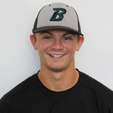

About Us
Dylan McGee
Dylan McGee is the owner of YankYak. A Junior at Syracuse University, Dylan is an Information Management and Technology major with a concentration in Front-End Web Design. The YankYak CEO also has a minor in Sports Analytics. He is hoping to use his degree to work in the sports industry (specifically baseball). Dylan’s vision for YankYak is to provide a fun, conversational, and collaborative portal for Yankees fans to enjoy. Dylan created this website from scratch, and plans on bettering the content not only on this site but in social media in order to create an amazing experience for fans of the Bronx Bombers.
Chris McGee
Chris McGee is a writer for YankYak. The brother of the owner of the site, Chris enjoys offering his opinion on the Yankees to the public. Chris spends lots of his time watching baseball and checking out statistics. A former player at Binghamton University, Chris has tons of experience with the game on and off the field. Together, Chris and Dylan do a strong job of representing YankYak.
Sam Crisalli
Sam Crisalli is another contributer for YankYak.You can expect to see him potentially writing articles every now and then. Sam is a graduate from Syracuse University. You can also catch Sam online playing fortnite at almsot any given time. Sam, along with Dylan, plan on starting their own podcast. So maybe expect to see that in the near future (no promises).